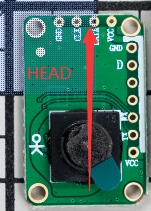
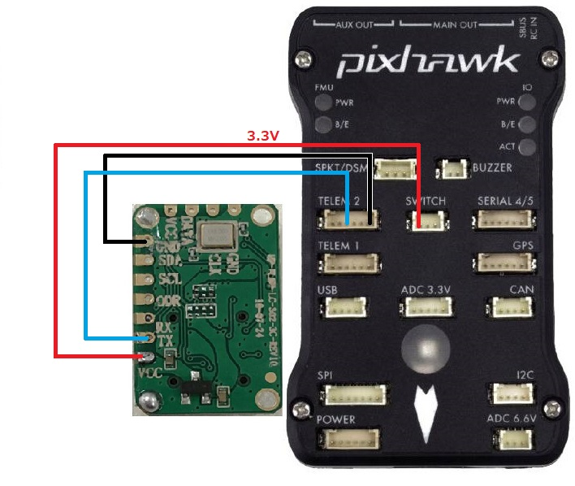

UPixels UPFlow Optical Flow¶
[copywiki destination=”copter,plane,rover”]
The UPixels UPFlow optical flow sensor is a lightweight and low cost optical flow sensor which can be used to improve horizontal position control especially in GPS denied environments.
Support for this sensor is available in Copter-4.1 (and higher)
Where to Buy¶
The sensor is available from various retailers. Here are some links:
For those in China:
Connection to Autopilot¶
 {kind=link}
{kind=link}
The flow sensor should be mounted with the head of the little man facing forward and the camera facing down, as shown in the image above.
Connect the sensor’s GND and TX pin to one of the autopilot’s serial ports. Note that the TX pin of the sensor should be connected to the RX pin of the autopilot. In the image above the sensor is connected to a Pixhawk’s Telem2 port.
Connect the sensor’s VCC to a 3.3V or 5V power source.
Set FLOW_TYPE = 8
Set SERIAL2_PROTOCOL = 18 if using Serial2/Telem2, if connected to another serial port use the corresponding SERIALx_PROTOCOL parameter
Additional Notes¶
As with the PX4Flow sensor a range finder is required to use the sensor for autonomous modes including Loiter and RTL
FlowHold does not require the use of a rangefinder
Performance can be improved by setting the sensors position parameters. For example if the sensor is mounted 2cm forward and 5cm below the frame’s center of rotation set FLOW_POS_X to 0.02 and FLOW_POS_Z to 0.05.
Testing and Setup¶
See Optical Flow Sensor Testing and Setup for setup guides.
Note that recommended value for EK2_FLOW_DELAY or EK3_FLOW_DELAY for this sensor is 10.